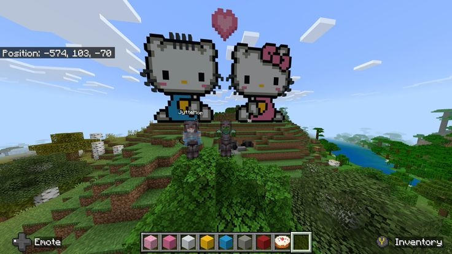

Seção Principal
Esta é a seção principal do conteúdo, onde as informações mais importantes são exibidas.
no jogo do mine, se aprende varias coisas diferentes.
Visite o Site Exemplo

Exemplo de estruturação semântica em HTML5.
Esta é a seção principal do conteúdo, onde as informações mais importantes são exibidas.
no jogo do mine, se aprende varias coisas diferentes.
Visite o Site Exemplo